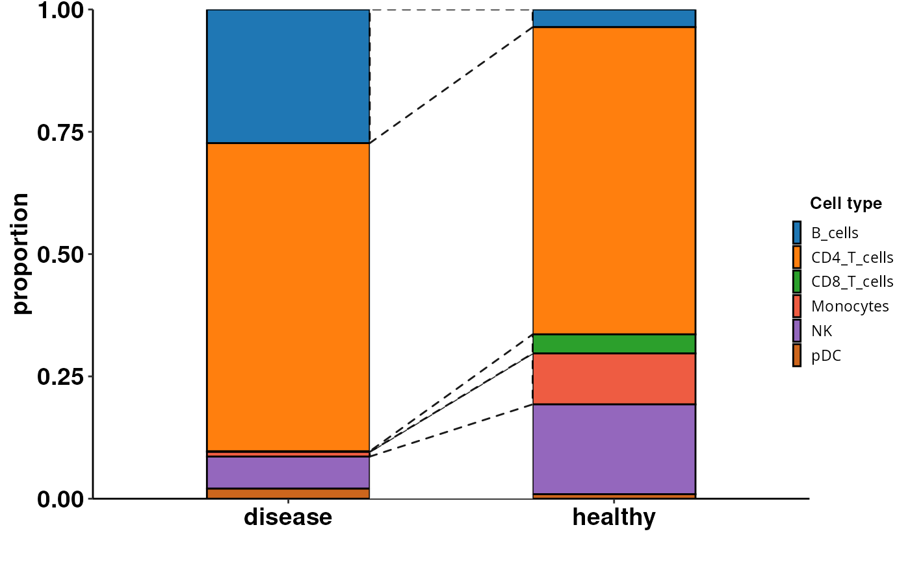

Computes and visualizes cell composition changes from a Seurat object using Scanpro. Integrates R and Python via reticulate to convert Seurat to AnnData and run Scanpro. Generates customizable plots with options for transformation, grouping, and bootstrapping. Returns a ggplot object or a list containing plot data and visualisation.
Usage
DO.CellComposition(
sce_object,
assay_normalized = "RNA",
cluster_column = "seurat_clusters",
sample_column = "orig.ident",
condition_column = "condition",
transform_method = "logit",
sort_x = NULL,
sub_ident = NULL,
sort_fill = NULL,
scanpro_plots = FALSE,
scanpro_group = NULL,
outputFolder = NULL,
return_df = FALSE,
bar_colors = NULL,
n_reps = NULL,
legend.pos.x = 0.48,
legend.pos.y = 0,
cowplot_width = 0.9,
cowlegend_width = 0.9,
...
)Arguments
- sce_object
The SCE object or Seurat
- assay_normalized
Assay with raw counts
- cluster_column
Column in meta data which will be used to segment the bar plot
- sample_column
Column in meta data containing individual sample names
- condition_column
Column in meta data plotted on the xaxis
- transform_method
Method of transformation of proporties, default: "logit"
- sort_x
Vector sorting the xaxis
- sub_ident
vector to subset the whole plot by
- sort_fill
Vector sorting the bar segments
- scanpro_plots
Boolean, will create plots provided in scanpro package, default: FALSE
- scanpro_group
Defines the clusters showed in scanpro plots
- outputFolder
Scanpro plots will be saved in this directory, defaults to current working directory
- return_df
Boolean, makes a list with first entry beeaing the dataframe used to create the ggplot and second entry is the plot
- bar_colors
(named) vector of colors used for plotting, the names will be sued to factorize the segments
- n_reps
Number of replicates generated by scanpro
- legend.pos.x
adjusts the position of the legend in horizontal
- legend.pos.y
adjusts the position of the legend in vertical
- cowplot_width
Changes the width on the plotting device for plot
- cowlegend_width
Changes the width on the plotting device for legend, useful for adjusting the legend position in combination with legend.pos.x and y
- ...
Further arguments passed to scanpro plotting functions
Examples
sce_data <-
readRDS(system.file("extdata", "sce_data.rds", package = "DOtools"))
DO.CellComposition(
sce_object = sce_data,
cluster_column = "annotation",
condition_column = "condition",
scanpro_plots = FALSE,
n_reps = 5
)
#> 2026-01-14 13:24:17 - Bootstrapping method activated with 5 simulated replicates!
#> .
#> For native R and reading and writing of H5AD files, an R <AnnData> object, and
#> conversion to <SingleCellExperiment> or <Seurat> objects, check out the
#> anndataR package:
#> ℹ Install it from Bioconductor with BiocManager::install("anndataR")
#> ℹ See more at <https://bioconductor.org/packages/anndataR/>
#> This message is displayed once per session.
#> ℹ Using the 'counts' assay as the X matrix
#> Using orig.ident, condition as id variables
#> Using condition as id variables
